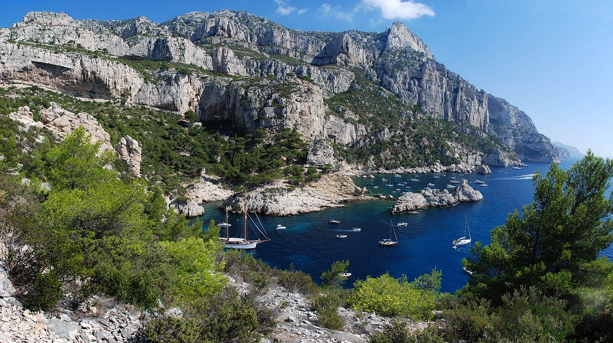

Calanque de Sugiton
Marseille, France · plongée, snorkeling, kayak, baignade

Criques calcaires aux eaux turquoise entre Marseille et Cassis : plongée, snorkeling et kayak dans un parc national.
- Lieu
- Marseille, France
- Niveau
- Intermédiaire
- Activités
- plongée, snorkeling, kayak, baignade
- Type d'eau
- Mer / océan
- Coordonnées
- 43.21, 5.44 (position approximative du secteur)
Dangers à connaître
- Chaleur et longue marche d’accès.
- Bateaux nombreux l’été.
Le conseil d'Ocean Buddy
Réservation d’accès parfois obligatoire l’été à Sugiton.
Ouvrir dans Ocean Buddy Télécharger sur l'App Store
Source : Description historique Ocean Buddy · vérification externe en attente.